소음진동기사(구) (2011-06-12 기출문제)
1과목: 소음진동개론
1. 1/1옥타브 밴드 분석기의 중심 주파수가 500Hz인 경우 하한주파수-상한주파수 범위로 옳은 것은?
- 250 ~ 1000Hz
- 270 ~ 780Hz
- 355 ~ 710Hz
- 450 ~ 560Hz
(정답률: 알수없음)

2. 다음은 역이승법칙에 관한 설명이다. ()안에 알맞은 것은?
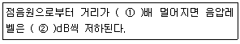
- ① 12, ② 26
- ① 12, ② 23
- ① 13, ② 23
- ① 13, ② 26
(정답률: 알수없음)
3. 다음 중 진동가속도레벨과 인체, 건물 등의 피해 사항의 연결로 가장 거리가 먼 것은?
- 20±5dB-인체가 약간 느낌
- 70±5dB-인체가 대부분 느끼며, 창문이 약간 흔들림
- 90±5dB-기물이 넘어지고 물이 넘침
- 110dB 이상-가옥파괴 현상, 산사태 발생
(정답률: 알수없음)
4. 음압진폭 2x 10-2N/m2일 때 음의 세기는? (단, 공기밀도 1.25kg/m3, 음속 337m/sec로 가점)
- 4.75×10-5W/m2
- 4.75×10-6W/m2
- 4.75×10-7W/m2
- 4.75×10-8W/m2
(정답률: 알수없음)
5. 청감보전회로에 대한 다음 설명 중 옳지 않은 것은?
- A 청감보정회로는 저음역대 신호보정에 일반적으로 많이 이용된다.
- B 청감보정회로는 중음역대 신호보정에 이용되나, 거의 사용하지는 않는다.
- C 청감보정회로는 주파수 변화에 따라 상대웅답도가 크게 변하지 않는 편이다.
- D 청감보정회로는 철도소음에 대한 청감응답으로 권장 된다.
(정답률: 알수없음)
6. 항공기 소음의 평가방법 또는 평기치로 사용되지 않는 것은?
- NNl
- EPNL
- NEF
- PNC
(정답률: 알수없음)
7. 단단하고 평평한 지면 위에 작은 응원이 있다. 음원에서 100m 떨어진 지점에서의 음압레벨은 75dB 이었다. 공기의 흡음감쇠를 0.4dB/10m로 할 때 음원의 출력은 약 몇w 인가?
- 0.02w
- 0.⑤w
- 1.0w
- 5.0w
(정답률: 알수없음)
8. 다음 주파수 대역 중 인체가 가장 민감하게 느끼는 진동(수직 및 수평) 주파수 범위는?
- 1~10 Hz
- 1~2 KHz
- 2~4 kHz
- 20 kHz 이상
(정답률: 알수없음)
9. 음의 용어 및 성질에 관한 설명으로 옳지 않은 것은?
- 음선(soundray)은 음의 진행방향을 나타내는 선으로 파면에 평행하다.
- 파면(wavefront)은 파동의 위상이 같은 점들을 연결한 면이다.
- 평면파(plane wave)는 긴 실린더의 피스톤 운동에 의하여 발생하는 파와 같이 응파의 파면들이 서로 평행한 파를 말한다.
- 파동(wave motion)은 매질 자체가 이동하는 것이 아니고 매질의 변형운동으로 이루어지는 에너지 전달을 말한다.
(정답률: 알수없음)
10. 공조기소음 등과 같은 실내소음을 평가하기 위한 척도로서 소음을 1/1 옥타밴드로 분석한 결과에 의해 실내소음을 평가하는 것은?
- NC
- PSIL
- TNI
- NNI
(정답률: 알수없음)
11. 입사측의 음향 임피던스를 Z1, 투과측의 음향 임피던스를 Z2라 하면, 경계면에서 수직입사하는 음파의 반사율 ro는 다음식과 같이 주어진다. Z2가 Z1의 1/5라면, 투과에너지 1t와 반사에너지 Ir과의 비 Ir/It는? (단, 경계면에서 음파의 흡수는 일어나지 않는다.)
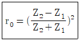
- 2/5
- 5/2
- 4/5
- 5/4
(정답률: 알수없음)
12. 다음 중 음의 전달경로로 옳은 것은?
- 외이도 - 고막 - 이소골 - 와우각
- 외이도 - 와우각 - 이관 - 이소골
- 외이도 - 이소골 - 이개 - 와우각
- 외이도 - 이관 - 고막 - 이소골
(정답률: 알수없음)
13. 두 개 이상의 음파가 겹쳐져서 더해질 때, 파동의 합성에 의해 동위상으로 겹쳐지면 진폭이 증대되고 역위상으로 겹쳐지면 진폭이 감소하는 것을 무엇이라고 하는가?
- 반사
- 굴절
- 회절
- 간섭
(정답률: 알수없음)
14. 각진동수가 W이고 변위진폭의 최대치가 A인 정현진동에 있어 가속도 진폭은?
- A/W
- WA
- WA2
- W2A
(정답률: 알수없음)
15. 인체의 청각기관에 관한 설명으로 옳지 않은 것은?
- 음의 세기는 섬모가 받는 자극의 크기에 따라 다르며, 음의 고저는 자극을 받는 섬모의 위치에 따라 결정된다.
- 귀바퀴는 집음기의 역할을 한다.
- 난원창은 이소골의 진동을 달팽이관 중의 림프액에 전달하는 진동판의 역할을 한다.
- 외이도는 임피던스 변환기의 역할을 한다.
(정답률: 알수없음)
16. 진동이 인체에 미치는 영향으로 가장 거리가 먼 것은?
- 후두계는 12~16Hz에서 배 속의 음식물이 심하게 오르락 내리락함을 느낀다.
- 호흡기는 16~20Hz에서 호흡이 힘들고, O2소비가 감소하며 맥박수가 감소한다.
- 4~14Hz에서 복통을 느낀다.
- 6Hz부근에서 허리ㆍ가슴ㆍ등쪽에 심한 통증을 느낀다.
(정답률: 알수없음)
17. 음에 관한 설명 중 가장 적합한 것은?
- 맥놀이는 주파수가 비슷한 두 소리가 간섭을 일으켜 보강간섭과 소멸간섭을 교대로 일으켜 주기적으로 소리의 강약이 반복되는 현상을 말한다.
- 각 음파들의 주파수가..같은 경우 위상차가 π/2 보다 큰 경우 서로 보강되나, π/2 보다 작은 경우에는 서로 상쇄되어, 음의 회절현상을 나타낸다.
- 정재파는 음압의 진폭이 최대점인 절(node)과 최소 점인 복(loop)의 위치가 위상차이에 따라 유동적 으로 변하는 경우를 뜻하며, 정상파라고도 한다.
- 음원이 반사면이 있는 공간에 놓이는 경우 입사파와 반사파의 회절작용으로 정재파가 나타나며 벽면 가까이에서는 음압의 절(node)이 나타난다.
(정답률: 알수없음)
18. 자유음장에서 무지향성 점음원으로부터 같은 거리만큼 떨어진 위치에서 소음을 측정하여 다음 표와 같은 결과를 얻었다. 2번 위치 방향으로의 지향계수는 얼마인가?
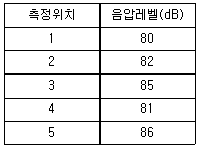
- -0.80
- 0.80
- 0.72
- 1.20
(정답률: 알수없음)
19. 레이노드씨 현상에 관한 설명으로 옳지 않은 것은?
- 인체에 말초혈관운동의 장애로 인한 혈액순환이 방해받는 현상이다.
- 국소진동의 영향으로 나타나며, 착암기, 공기해머 등을 많이 사용하는 사람의 손에 나타나는 증상이다.
- 검은색 손가락 증상이라고도 한다.
- 주위 온도가 높아지면 이러한 증상이 악화된다.
(정답률: 알수없음)
20. 75dB인 점음원 5개, 95dB인 점음원 3개 등 8개의 소음원을 같은 장소에서 동시에 가동할 때 약 몇 dB의 소음이 되겠는가?
- 85dB
- 90dB
- 97dB
- 100dB
(정답률: 알수없음)
2과목: 소음방지기술
21. 용적 125m3, 표면적 150m2인 잔향실의 잔향시간은 5.5초이다. 이 잔향실의 바닥에 10m2의 음재를 부착하여 측정한 잔향시간이 3.2초로 되었을 때, 이 흡음재의 흡음율은?
- 약 0.6
- 약 0.5
- 약 0.4
- 약 0.3
(정답률: 알수없음)
22. 다음 STC값을 평가하는 절차에 관한 설명이다. ()안에 알맞은 것은?
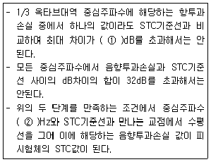
- ① 3, ② 500
- ① 3, ② 1000
- ① 8, ② 500
- ① 8, ② 1000
(정답률: 알수없음)
23. 공동공명기형 소음기의 공동내 흡음재를 충진할 경우 감음특성으로 가장 적합한 것은?
- 저주파음 소거의 탁월현상이 향상되며 고주파까지 효과적인 감음특성을 보인다.
- 저주파음 소거의 탁월현상은 완화되지만 고주파까지 거의 평탄한 감음특성을 보인다.
- 고주파음 소거의 탁월현상은 완화되지만 저주파에서는 효과적인 감음특성을 보인다.
- 고주파음 소거의 탁월현상은 향상되지만 저주파에서는 일정한 감음특성을 보인다.
(정답률: 알수없음)
24. 평균 흡음율이 0.3이고 평균 투과율이 0.03인 음원밀폐상자의 삽입손실치(dB)는?
- 10dB
- 20dB
- 30dB
- 50dB
(정답률: 알수없음)
25. 다음 중 방음벽에 의한 소음감쇠량의 대부분을 차지 하는 것은?
- 방음벽의 높이에 의해 결정되는 회절감쇠
- 방음벽의 재질에 의해 결정되는 투과감쇠
- 방음벽의 두께에 의해 결정되는 반사감쇠
- 방음벽의 길이에 의해 결정되는 간섭감쇠
(정답률: 알수없음)
26. 다음과 같은 재료에 단일벽을 구성할 때, 500Hz에서 투과손실치가 가장 큰 것은? (단, 모든 재료는 수직입사 질량법칙만을 고려한다.)
- 재료A : 밀도 7800kg/m3, 두께 20mm
- 재료B : 밀도 2000kg/m3, 두께 50mm
- 재료C : 밀도 3500kg/m3, 두께 30mm
- 재료D : 밀도 3800kg/m3, 두께 25mm
(정답률: 알수없음)
27. 그림과 같은 다공 공명형 소음기를 사용하여 기계 장치의 배기 토출소음을 저감하려고 한다. 공명주파수는 약 얼마인가? (단, 기계장치 작동 시의 온도는 20℃, 내관의 내경 40mm, 내관의 두께 2mm, 외관의 내경 100mm, 외관의 길이 200mm, 구멍의 지름은 10mm이고, 작은 구멍의 보정장=내관두께+1.6×구멍의 반경으로 한다.)
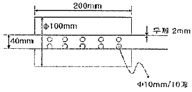
- 8Hz
- 62Hz
- 125Hz
- 430Hz
(정답률: 알수없음)
28. 방음벽 재료로 음향특성 및 구조강도 이외에 고려 하여야 하는 사항으로 가장 거리가 먼 것은?
- 방음벽에 사용되는 모든 재료는 인체에 유해한 물질을 함유하지 않아야 한다.
- 방음벽의 모든 도장은 주변환경과 어울리도록 구분이 명확한 광택을 사용하는 것이 좋다.
- 방음판은 하단부에 배수공(Drain hole) 등을 설치하여 배수가 잘 되어야 한다.
- 방음벽은 20년이상 내구성이 보장되는 재료를 사용하여야 한다.
(정답률: 알수없음)
29. 산업기계에서 기류음에 의한 소음 방지대책으로 가장거리가 먼 것은?
- 밸브를 다단화한다.
- 관의 곡률부위를 완화시킨다.
- 분출유속을 저감시킨다.
- 가진력을 억제시킨다.
(정답률: 알수없음)
30. 흡음재료를 분류할 때, 다음 중 합판과 같은 판상 재료의 흡음영역으로 가장 적합한 것은?
- 저음역
- 중음역
- 고음역
- 중고음역
(정답률: 알수없음)
31. 어떤 벽체에 음이 수직입사 할 때 이 벽체의 반사율이 0.35 이었다. 이 벽체의 투과손실은? (단, 경계면에서의 음의 흡수는 없다.)
- 1.1dB
- 1.9dB
- 4.6dB
- 7.5dB
(정답률: 알수없음)
32. 균질인 단일벽의 두께를 4배로 할 경우 일치효과의 한계주파수의 변화로 옳은 것은? (단, 기타조건은 일정)
- 원래의 1/4
- 원래의 1/2
- 원래의 2배
- 원래의 4배
(정답률: 알수없음)
33. 중공 이중벽의 공기층 두께가 40cm, 두 벽의 면밀도가 각각 150kg/m2, 200kg/m2 일 때, 저음역에서의 공명주파수는?
- 약 7Hz
- 약 10Hz
- 약 18Hz
- 약 22Hz
(정답률: 알수없음)
34. 크기가 5m×4m이고 투과손실이 40dB인 벽체에 서류를 주고 받기 위한 개구부를 설치하려고 한다. 이 때 이 벽체의 투과손실을 20dB 정도로 유지하기 위해서는 개구부의 크기를 약 얼마 정도로 해야 하는가?
- 약 0.⑤ m2
- 약 0.2 m2
- 약 0.5 m2
- 약 0.55 m2
(정답률: 알수없음)
35. 흡음덕트형 소음기에서 기류음의 영향에 관한 설명 으로 가장 적합한 것은?
- 음파와 같은 방향으로 기류가 흐르면 소음감쇠치의 정점은 고주파측으로 이동하면서 그 크기는 낮아진다.
- 음파와 반대방향으로 기류가 흐르면 소음감쇠치의 정점은 고주파측으로 이동하면서 그 크기는 높아진다.
- 음파와 같은 방향으로 기류가 흐르면 소음감쇠치의 크기는 속도의 제곱에 비례하여 커진다.
- 음파와 반대방향으로 기류가 흐르면 소음감쇠치의 크기는 속도에 반비례하여 작아진다.
(정답률: 알수없음)
36. 부피가 3000m3, 내부표면적이 1700m2, 평균 흡음율이 0.3인 확산음장으로 볼 수 있는 공장에 관한 다음 설명 중 옳지 않은 것은?
- 실내에 파워레벨 90dB의 음원을 설치할 때 실내의 평균 음압레벨은 약 67dB 이다.
- 실정수는 약 730m2이다.
- Sabine의 잔향시간은 약 0.95초이다.
- 실내 용선의 평균 자유행로(mean free path)는 약 11.8m이다.
(정답률: 알수없음)
37. fan의 날개수가 60개인 송풍기가 1096 rpm으로 운전되고 있다. 이 송풍기의 출구에 단순팽창한 소음기를 부착하여 송풍기에서 발생하는 기본음에 대하여 최대 투과손실 20dB을 얻고자 할 때, 소음기의 팽창부의 최적길이(cm)는? (단, 관로 중 기체의 온도는 40℃ 이다.)
- 7.2cm
- 8.1cm
- 8.9cm
- 9.7cm
(정답률: 알수없음)
38. 원형 흡음덕트의 흡음계수(K)가 0.29 일 때, 직경 85cm, 길이 3.15m인 덕트에서의 감쇠량은? (단, 덕트 내 흡음재료의 두께는 무시한다.)
- 약 4.3 dB
- 약 4.8 dB
- 약 5.3 dB
- 약 5.8 dB
(정답률: 알수없음)
39. 가로, 세로, 높이가 각각 15m, 20m, 3m 이고, 잔향 시간이 3초인 방의 실정수는?
- 31m2
- 41m2
- 51m2
- 61m2
(정답률: 알수없음)
40. 방음벽 설계시 유의점에 관한 설명으로 옳지 않은 것은?
- 방음벽에 의한 실용적인 삽입손실치의 한계는 점음원일 때 25dB, 선음원일 때 21dB 정도이며, 실제로는 5~15dB 정도이다.
- 음원의 지향성이 수음측 방향으로 클 때에는 벽에 의한 감쇠치가 계산치보다 크게 된다.
- 벽의 투과손실은 회절감쇠치보다 적어도 5dB 이상 크게 하는 것이 바람직하다.
- 벽의 길이는 점음원 일 때 벽높이의 3배 이상, 선음원 일 때 음원과 수음점 간의 직선거리 이상으로 하는 것이 바람직하다.
(정답률: 알수없음)
3과목: 소음진동 공정시험 기준
41. 다음 중 발파진동 측정자료 평가표 서식에 명시되어 있지 않은 것은?
- 폭약의 종류
- 측정자의 소속, 성명
- 도로구조 및 교통특성
- 사업주 성명
(정답률: 알수없음)
42. 규제기준 중 발파소음 측정에서 시간대별 보정발파횟수가 8회일 경우 보정량(dB)으로 옳은 것은?
- 7
- 8
- 9
- 10
(정답률: 알수없음)
43. 항공기 소음한도 측정방법에서 측정한 일일 항공기 등가 통과횟수가 351 이다. 0시~07시까지 비행횟수가 5, 07~19시까지는 211, 19시~22시까지는 10 일 때, 22시~24시까지의 비행횟수는?
- 4
- 6
- 10
- 20
(정답률: 알수없음)
44. 환경기준 중 소음측정방법에서 측정점 선정 시 도로변 지역의 범위기준으로 옳은 것은?
- 도로단으로부터 차선수 × 5m
- 도로단으로부터 차선수 × 10m
- 도로단으로부터 차선수 × 15m
- 도로단으로부터 차선수 × 20m
(정답률: 알수없음)
45. 1일 동안의 평균 최고소음도가 101dB(A)이고, 1일간 공기의 등가통과횟수가 5⑤회 일 때 1일 단위의 WECONL(dB)은?
- 약 94
- 약 98
- 약 101
- 약 1⑤
(정답률: 알수없음)
46. 소음의 환경기준 측정시 낮시간대에는 각 측정지점에서 몇 시간 이상 간격으로 몇 회 이상 측정하여 산술평균한 값을 측정소음도로 하는가?
- 1시간 이상 간격으로 2회 이상
- 1시간 이상 간격으로 4회 이상
- 2시간 이상 간격으로 2회 이상
- 2시간 이상 간격으로 4회 이상
(정답률: 알수없음)
47. 진동픽업의 설치장소 조건으로 옳지 않은 것은?
- 수직방향 진동레벨을 측정할 수 있도록 설치한다.
- 경사 또는 요철이 없는 장소로 하고, 수평면을 충분히 확보할 수 있는 장소로 한다.
- 복잡한 반사, 회절현상이 예상되는 지점은 피한다.
- 완충물이 풍부하고, 충분히 다져서 단단히 굳은 장소로 한다.
(정답률: 알수없음)
48. 7일간 측정한 WECPNL값이 각가 76, 78, 77, 78, 80, 79, 77dB일 경우 7일간 평균 WECPNL(dB)은?
- 77
- 78
- 79
- 80
(정답률: 알수없음)
49. 레벨레인지 변환기가 있는 소음계에서 레벨레인지 변환기의 전환오차는 얼마 이내이어야 하는가?
- 0.1 dB
- 0.5 dB
- 1.0 dB
- 5.0 dB
(정답률: 알수없음)
50. 다음 진동레벨계의 구성도에서 ①~④의 명칭으로 가장 적합한 것은? (단, ⑤ 지시계기, ⑥ 교정장치, ⑦ 출력단자이다.)
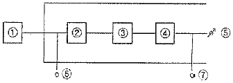
- ①:진동픽업, ②:증폭기, ③:레벨레인지변환기, ④:감각보정회로
- ①:진동픽업, ②:레벨레인지변환기, ③:증폭기, ④:감각보정회로
- ①:진동픽업, ②:증폭기, ③:감각보정회로, ④:레벨레인지변환기
- ①:진동픽업, ②:감각보정회로, ③:증폭기, ④:레벨레인지변환기
(정답률: 알수없음)
51. 다음은 진동레벨계에서 지시계기에 관한 사항이다. ()안에 알맞은 것은?
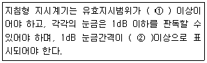
- ① 10dB, ② 1mm
- ① 10dB, ② 10mm
- ① 15dB, ② 1mm
- ① 15dB, ② 10mm
(정답률: 알수없음)
52. 소음ㆍ진동 공정시험기준에서 사용하는 용어의 정의로 옳지 않은 것은?
- 반사음 : 한 매질 중의 음파가 다른 매질의 경계면에 입사한 후 진행방향을 변경하여 본래의 매질 중으로 되돌아오는 음을 말한다.
- 정상소음 : 시간에 따른 변동폭이 일정하게 큰 소음을 말한다.
- 소음도 : 소음계의 청강보정회로를 통하여 측정한 지시치를 말한다.
- 소음원 : 소음을 발생하는 기계ㆍ기구, 시설 및 기타 물체 또는 환경부령으로 정하는 사람의 활동을 말한다.
(정답률: 알수없음)
53. 규제기준 중 생활소음 측정방법에서 측정점 선정에 관한 설명으로 옳지 않은 것은?
- 피해가 우려되는 곳이 2층 이상의 건물인 경우 등으로서 피해가 우려되는 자의 부지경계선에 비하여 소음도가 더 큰 장소가 있는 경우에는 소음도가 높은 곳에서 소음원 방향으로 창문ㆍ출입문 또는 건물벽 밖의 1.0 ~ 3.5m 떨어진 지점으로 한다.
- 측정지점에 높이가 1.5m를 초과하는 장애물이 있는 경우에는 장애물로부터 소음원 방향으로 1.0 ~3.5m 떨어진 지점으로 한다.
- 장애물로부터 소음원 방향으로 규정거리만큼 떨어지기 어려운 경우에는 장애물 상단상부로부터 0.3m 이상 떨어진 지점으로 할 수 있다.
- 측정지점에 있는 장애물이 방음벽이거나 충분한 차음이 예상되는 경우에는 장애물 밖의 1.0 ~ 3.5m 떨어진 지점 중 암영대(暗影帶)의 영향이 적은 지점으로 한다.
(정답률: 알수없음)
54. 항공기 소음한도 측정시 배경소음보다 10dB이상 큰 항공기소음의 지속시간의 평균이 40초 일 경우 WECPNL 에 보정하는 보정량(dB)은?
- 2
- 3
- 4
- 5
(정답률: 알수없음)
55. 배출허용기준 진동측정 시 측정점 선정으로 가장 적합한 것은?
- 진동배출시설을 운영하는 사업자의 부지경계선과 가장 큰 피해가 우려되는 장소의 중간지점
- 공장부지경계선 중 피해의 우려가 있는 장소로서 진동레벨이 높을 것으로 예상되는 지점
- 진동원으로부터 가장 가까운 부지경계선
- 진동원으로부터 가장 먼 부지경계선
(정답률: 알수없음)
56. 소음계의 구성부분 중 진동레벨계의 진동픽업에 해당되는 것은?
- microphone
- amplifier
- calibaration network calibrator
- weighting networks
(정답률: 알수없음)
57. 다음은 소음계의 성능기준이다. ( )안에 알맞은 것은?
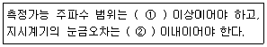
- ① 31.5Hz ~ 8kHz, ② 0.5dB
- ① 31.5Hz ~ 8kHz, ② 1dB
- ① 8Hz ~ 31.5kHz, ② 0.5dB
- ① 8Hz ~ 31.5kHz, ② 1dB
(정답률: 알수없음)
58. 측정소음도와 배경소음도의 차이가 일정 수준 이상이 되면 배경소음의 보정 없이 측정소음도를 대상소음도로 한다. 이 때 기준이 되는 측정소음도와 배경소음도의 차이는?
- 10dB
- 6dB
- 4dB
- 3dB
(정답률: 알수없음)
59. 디지털 진동자동분석계를 이용하여 배출허용기준 진동을 측정할 경우 분석방법으로 옳은 것은?
- 샘플주기를 1초이내에서 결정하고 10분이상 측정하여 자동 연산ㆍ기록한 80% 범위의 상단치인 L10값을 그 지점의 측정진동레벨 또는 배경진동레벨로 한다.
- 샘플주기를 1초이내에서 결정하고 5분이상 측정하여 자동 연산ㆍ기록한 80% 범위의 상단치는 L10값을 그 지점의 측정진동레벨 또는 배경진동레벨로 한다.
- 샘플주기를 1초이내에서 결정하고 10분이상 측정하여 자동 연산ㆍ기록한 90% 범위의 상단치인 L10값을 그 지점의 측정진동레벨 또는 배경진동레벨로 한다.
- 샘플주기를 1초이내에 결정하고 5분이상 측정하여 자동 연산ㆍ기록한 90% 범위의 상단치인 L10값을 그 지점의 측정진동레벨 또는 배경진동레벨로 한다.
(정답률: 알수없음)
60. 규제기준 중 생활진동을 진동레벨 기록기를 사용하여 측정한 결과가 62dB(V), 63dB(V), 65dB(V), 61dB(V), 64dB(V), 62dB(V), 63dB(V), 64dB(V), 63dB(V), 64dB(V), 63dB(V), 65dB(V), 65dB(V) 일 경우 측정진동레벨은?
- 62dB(V)
- 63dB(V)
- 64dB(V)
- 65dB(V)
(정답률: 알수없음)
4과목: 진동방지기술
61. 다음 중 가진력 저감의 예로 가장 거리가 먼 것은?
- 단조기를 단압프레스로 교체한다.
- 터보형 고속회전압축기를 왕복운동압축기로 교체한다.
- 크랭크 기구를 가진 왕복운동기계는 복수 개의 실린더를 가진 것으로 교체한다.
- 기초부의 중량을 크게 하거나 작게 하여 진동진폭을 감소시킨다.
(정답률: 알수없음)
62. 다음 방진대책 중 발생원 대책으로 적당하지 않은 것은?
- 가진력 감쇠
- 기초중량의 부가 및 경감
- 동적흡진
- 방진구 설치
(정답률: 알수없음)
63. 다음은 진동방지 계획을 수립하기 위한 일반적인 절차이다. ()안에 들어갈 내용으로 가장 적합한 것은?
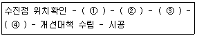
- ① 수진점 일대의 진동 실태조사 ② 수진점의 진동규제기준 확인 ③ 저감 목표레벨의 설정 ④ 발생원 위치와 발생기계 확인
- ① 수진점의 진동규제기준 확인 ② 수진점 일대의 진동 실태조사 ③ 저감 목표레벨의 설정 ④ 발생원 위치와 발생기계 확인
- ① 수진점 일대의 진동 실태조사 ② 수진점의 진동규제기준 확인 ③ 발생원 위치와 발생기계 확인 ④ 저감 목표레벨의 설정
- ① 수진점의 진동규제기준 확인 ② 수진점 일대의 진동 실태조사 ③ 발생원 위치와 발생기계 확인 ④ 저감 목표레벨의 설정
(정답률: 알수없음)
64. 가속도계로 어떤 진동체의 최대가속도를 측정하였더니 중력가속도의 20배였다. 이 때 진동체의 진동수가 480rpm이면 진동체의 진폭은?
- 4.63cm
- 7.76cm
- 19.40cm
- 22.13cm
(정답률: 알수없음)
65. 전기모터가 1600rpm으로 기계장치를 구동시키고, 계는 고무깔개 위에 설치되어 있으며, 고무깔개는 0.35cm의 정적처짐을 나타내고 있다. 고무깔개의 감쇠비는 0.35, 진동수비는 3.5 라면 기초에 대한 힘의 전달율은?
- 0.08
- 0.16
- 0.23
- 0.28
(정답률: 알수없음)
66. 연속체의 진동은 대상체 내의 힘과 모멘트의 평형을 이용하거나 계에 관련되는 변형 및 운동에너지를 활용하여 운동방정식을 유도하면 통상 2계 또는 4계 편미분방정식으로 되는 경우가 대부분인데, 다음중 주로 4계 편미분방정식으로 유도되는 것은?
- 판의 진동
- 븀의 종진동
- 봉의 비틀림진동
- 현의 진동
(정답률: 알수없음)
67. 회전속도가 1000rpm인 원심팬이 있다. 방진고무로 탄성지지했을 때 진동전달률이 0.2라면 이 계의 고유진동수는?
- 6.8Hz
- 16.2Hz
- 24.8Hz
- 35.7Hz
(정답률: 알수없음)
68. 고유진동수 1Hz에서 감쇠비 0.5인 진동계가 있다. 측정할 물체가 50Hz의 조화진동을 하고 있을 때 진동계의 진폭기록이 a 이면 이 물체의 최대진폭은?
- 0.5a
- a
- 1.5a
- 2a
(정답률: 알수없음)
69. 원통형 코일스프링의 스프링 정수에 관한 설명으로 옳은 것은?
- 스프링 정수는 전단탄성율에 반비례한다.
- 스프링 정수는 유효원수에 비례한다.
- 스프링 정수는 소선 직경의 4제곱에 비례한다.
- 스프링 정수는 평균코일 직경의 3제곱에 비례한다.
(정답률: 알수없음)
70. 자유낙하 하는 물체에 의하여 발생하는 충격력은 낙하높이가 2배 높아지면 어떻게 변하는가?
- 원래의 1.2배로 된다.
- 원래의 1.4배로 된다.
- 원래의 4배로 된다.
- 원래의 8배로 된다.
(정답률: 알수없음)
71. 기기의 진동방지를 위한 방진스프링의 정적 수축량이 25cm 이었다면 고유 진동수는?
- 약 1Hz
- 약 5Hz
- 약 10Hz
- 약 100Hz
(정답률: 알수없음)
72. 방진고무의 특성 및 사용상 주의점으로 옳지 않은 것은?
- 고무자체의 내부마찰에 의해 저항을 얻을 수 있어 고주파 진동의 차진에 양호하다.
- 형상의 선택이 비교적 자유롭고 사용방법에 따라 회전 방향의 스프링 정수를 광범위하게 선택할 수 있다.
- 정하중에 따른 방진고무의 수축량은 10~15% 이내로 하는 것이 바람직하다.
- 강제진동수가 고유진동수의 1/3 이하인 것을 택하고 신장응력의 작용을 유도하여 사용하도록 한다.
(정답률: 알수없음)
73. 임계감쇠계수 Cc를 옳게 표시한 식은? (단, 감쇠계수 Ce, 질량 m, 스프링상수 k, 고유각 진동수 ωn, 감쇠비 ξ이다.)
- Cc=Ceξ
- Cc=mωn
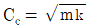
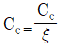
(정답률: 알수없음)
74. 측정대상 진동의 가속도 실효치가 1cm/s일 때 진동 가속도 레벨은?
- 50dB
- 60dB
- 70dB
- 80dB
(정답률: 알수없음)
75. 다음 방진재료 중 고주파 진동시에 단락되고, 공진시에 전달율이 매우 크지만, 환경요소(부식, 용해 등)에 대한 저항성이 큰 것은?
- 공기스프링
- 방진고무
- 콜크
- 금속스프링
(정답률: 알수없음)
76. 중량 22N, 점성감쇠계수 0.06Nㆍs/cm, 스프링 정수 0.35N/cm 일 때, 이 계의 감쇠비는?
- 0.28
- 0.34
- 0.37
- 0.41
(정답률: 알수없음)
77. 정적 불균형 질량 3.9kg이 반지름 0.2m의 원주상을 600rpm으로 회전하는 경우, 이 회전측에 직각방향 으로 발생하는 가진력은? (단, 기타방향의 분력은 제외)
- 약 1580N
- 약 2080N
- 약 2580N
- 약 3080N
(정답률: 알수없음)
78. 공기스프링에 관한 설명으로 가장 적합한 것은?
- 구조가 간단하고 시설비가 적게 소요된다.
- 사용진폭이 적어 별도의 댐퍼가 필요없는 경우가 많다.
- 부하능력의 범위가 작다.
- 압축기 등의 부대시설이 필요하다.
(정답률: 알수없음)
79. 감쇠자유진동을 하는 진동계에서 진폭이 3사이클 후에 50% 감소 되었다면, 이 계의 대수감쇠율은?
- 0.231
- 0.347
- 0.366
- 0.549
(정답률: 알수없음)
80. 쇠로 된 금속관 사이의 접속부에 고무를 넣어 진동 절연하고자 한다. 파동에너지 반사율이 95%가 되면, 전달되는 진동의 감쇠량은 몇 dB이 되는가?
- 10dB
- 13dB
- 16dB
- 20dB
(정답률: 알수없음)
5과목: 소음진동 관계 법규
81. 소음진동관리법규상 특정공사의 사전신고대상 기계ㆍ장비의 종류에 해당되지 않는 것은?
- 압입식 항타항발기
- 압쇄기
- 콘크리트 펌프
- 브레이커(휴대용 포함)
(정답률: 알수없음)
82. 소음진동관리법규상 소음ㆍ진동방지시설 중 소음방지시설로 가장 거리가 먼 것은?
- 방음덮개시설
- 방음터널시설
- 방음림 및 방음언덕
- 방진구시설
(정답률: 알수없음)
83. 환경정책기본법상 용어의 정의로 옳지 않은 것은?
- “사전환경성검토”라 함은 환경에 영향을 미치는 행정계획의 수립 또는 개발사업(행정계획의 수립이 요구되지 아니하는 개발사업을 말한다.)의 허가ㆍ인가ㆍ승인ㆍ면허ㆍ결정ㆍ지정 등을 함에 있어서 해당 행정계획또는 개발사업에 대한 대안의 설정ㆍ분석 등 평가를 통하여 미리 환경측면의 적정성 및 입지의 타당성 등을 검토하는 것을 말한다.
- “자연환경”이라 함은 지하ㆍ지표(해양을 포함한다.) 및 지상의 모든 생물과 이들을 둘러싸고 있는 비생물적인 것을 포함한 자연의 상태(생태계 및 자연경관을 포함한다.)를 말한다.
- “환경복구”이라 함은 일정한 지역안에서 환경의 질을 유지하고 환경오염 또는 환경훼손에 대하여 환경이 스스로 수용ㆍ정화 및 복원할 수 있는 한계를 말한다.
- “생활환경”이라 함은 대기, 물, 폐기물, 소음ㆍ진동, 악취, 일조 등 사람의 일상생활과 관계되는 환경을 말한다.
(정답률: 알수없음)
84. 소음진동관리법규상 진동배출시설기준으로 옳지 않은 것은? (단, 동력을 사용하는 시설 및 기계ㆍ기구로 한정한다.)
- 30마력 이상의 분쇄기(파쇄기 및 마쇄기를 포함)
- 30마력 이상의 단조기
- 30마력 이상의 목재가공기계
- 30마력 이상의 성형기(압출ㆍ사출을 포함)
(정답률: 알수없음)
85. 소음진동관리법규상 시ㆍ도지사 등이 개선명령을 하였으나 천재지변 등 기타 부득이한 사정이 있어 개선 기간 내에 조치를 끝내지 못한 자에 대해 그 기간을 연장 할 수 있는 범위기준은?
- 3개월의 범위
- 6개월의 범위
- 9개월의 범위
- 12개월의 범위
(정답률: 알수없음)
86. 소음진동관리법상 배출시설과 방지시설을 정상적으로 운영ㆍ관리하기 위한 환경기술인을 임명하지 아니한 자에 대한 벌칙(또는 과태료)기준으로 옳은 것은?
- 200만원 이하의 과태료
- 300만원 이하의 과태료
- 6월 이하의 징역 또는 500만원 이하의 벌금
- 1년 이하의 징역 또는 1천만원 이하의 벌금
(정답률: 알수없음)
87. 소음진동관리법규상 공업지역의 철도진동 한도기준으로 옳은 것은? (단, 주간(06:00~22:00)기준)
- 60dB(V)
- 65dB(V)
- 70dB(V)
- 75dB(V)
(정답률: 알수없음)
88. 소음진동관리법상 전국적인 소음ㆍ.진동의 실태를 파악하기 위하여 측정망을 설치하고 상시 측정하여야 하는 자는?
- 국무총리
- 유역환경청장
- 환경부장관
- 지방환경청장
(정답률: 알수없음)
89. 소음진동관리법규상 인증시험대행기관과 관련한 행정처분기준 중 거짓이나 그 밖의 부정한 방법으로 지정을 받은 경우 1차 행정처분기준으로 옳은 것은?
- 지정취소
- 업무정지 6월
- 업무정지 3월
- 업무정지 1월
(정답률: 알수없음)
90. 소음진동관리법령상 소음도 검사기관의 지정기준중 검사장의 면적기준으로 옳은 것은?
- 100m2 이상(10m × 10m 이상)
- 225m2 이상(15m × 15m 이상)
- 400m2 이상(20m × 20m 이상)
- 900m2 이상(30m × 30m 이상)
(정답률: 알수없음)
91. 소음진동관리법령상 인증을 생략할 수 있는 자동차에 해당하는 것은?
- 제철소ㆍ조선소 등 한정된 장소에서 운행되는 자동차로서 환경부장관이 정하여 고시하는 자동차
- 군용ㆍ소방용 및 경호 업무용 등 국가의 특수한 공무용으로 사용하기 위한 자동차
- 여행자 등이 다시 반출할 것을 조건으로 일시 반입 하는 자동차
- 자동차제작자ㆍ연구기관 등이 자동차의 개발이나 전시 등을 목적으로 사용하는 자동차
(정답률: 알수없음)
92. 소음진동관리법규상 소음도 표지판의 색상기준으로 옳은 것은?
- 흰색판에 검은색 문자
- 회색판에 검은색 문자
- 검은색판에 흰색 문자
- 검은색판에 회색 문자
(정답률: 알수없음)
93. 소음진동관리법상 환경부장관은 인증시험을 효율적으로 수행하기 위해 전문기관을 지정해 인증시험을 수행하게 할 수 있는데, 다음 중 그 기관의 업무종사자가 다른 사람에게 자신의 명의로 인증시험을 하게 하는 행위를 한 경우의 벌칙(또는 과태료) 기준으로 옳은 것은?
- 3년 이하의 징역 또는 1천500만원 이하의 벌금
- 1년 이하의 징역 또는 1천만원 이하의 벌금
- 6개월 이하의 징역 또는 500만원 이하의 벌금
- 300만원 이하의 과태료
(정답률: 알수없음)
94. 소음진동관리법규상 주거지역의 주간(06:00~22:00) 도로교통소음의 한도는?
- 58 LeqdB(A)
- 60 LeqdB(A)
- 68 LeqdB(A)
- 73 LeqdB(A)
(정답률: 알수없음)
95. 소음진동관리법상 환경부장관은 법에 의한 인증을 받아 제작한 자동차의 소음이 제작차 소음허용기준에 적합한지의 여부를 확인하기 위하여 대통령령으로 정하는 바에 따라 검사를 실시하여야 하는데, 이 때 검사에 드는 비용은 누가 부담하는가?
- 국가
- 지방자치단체
- 자동차제작자
- 검사기관
(정답률: 알수없음)
96. 소음진동관리법규상 소음배출시설기준에 해당하지 않는 것은?
- 10마력 이상의 압축기(나사식 압축기는 50마력 이상으로 한다.)
- 10마력 이상의 연탄제조용 윤전기
- 20마력 이상의 목재가공기계
- 20마력 이상의 공작기계
(정답률: 알수없음)
97. 소음진동관리법규상 운행자동차의 배기소음(dB(A)) 및 경적소음(dB(C)) 허용기준은? (단, 2006년 1월 1일 이후 제작된 경자동차 기준)
- 1⑤dB(A) 이하, 110dB(C) 이하
- 100dB(A) 이하, 112dB(C) 이하
- 100dB(A) 이하. 110dB(C) 이하
- 100dB(A) 이하, 1⑤dB(C) 이하
(정답률: 알수없음)
98. 다음은 소음진동관리법규상 공사장의 생활진동 규제 기준이다. ( )안에 알맞은 것은?
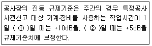
- ① 1시간 이하, ② 1시간 초과 3시간 이하
- ① 2시간 이하, ② 2시간 초과 4시간 이하
- ① 3시간 이하, ② 3시간 초과 6시간 이하
- ① 6시간 이하, ② 6시간 초과 12시간 이하
(정답률: 알수없음)
99. 소음진동관리법규상 시ㆍ도지사 등은 배출허용기준 준수 확인 여부를 위해 배출시설과 방지시설의 가동 상태를 점검할 수 있는데, 다음 중 점검을 위해 소음ㆍ진동검사를 의뢰할 수 있는 기관에 해당하지 않는 것은?
- 보건환경연구원
- 유역환경청
- 환경과학시험원
- 국립환경과학원
(정답률: 알수없음)
100. 다음은 소음진동관리법규상 자동차의 규모기준에 관한 설명이다. ( )안에 알맞은 것은? (단, 2006년 1월 1일부터 제작되는 자동차 기준)
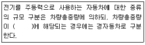
- 3.5톤 미만
- 2.0톤 미만
- 1.5톤 미만
- 1.0톤 미만
(정답률: 알수없음)